History
Although matcha is often traced to Japanese roots, it originated in Tang dynasty China in 762 CE. Both countries have rich historical and cultural ties to the tea; today, it enjoys a vast global presence.
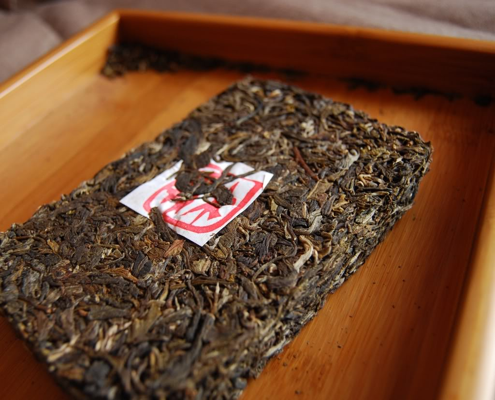

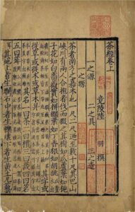
762 CE: Tang dynasty, China
The first record of powdered tea in China was in Lu Yu’s “The Classic of Tea” manuscript. At the time, tea leaves were steamed, dried, and pressed into bricks for trade, then ground into powder for consumption.
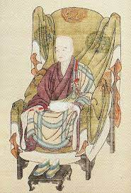
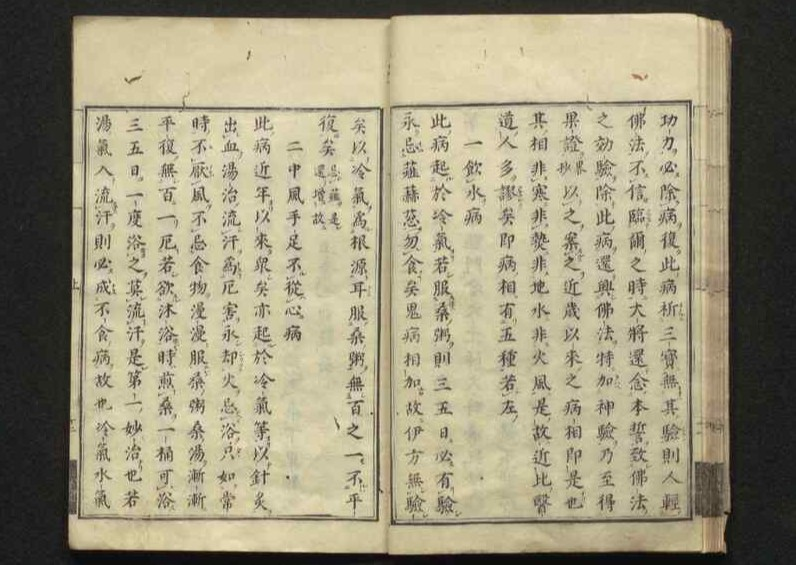
1191 CE: Kamakura period, Japan
Powdered tea was first introduced in Japan when Buddhist priest Myoan Eisai returned from Song dynasty China with tea leaves as a form of medicine.
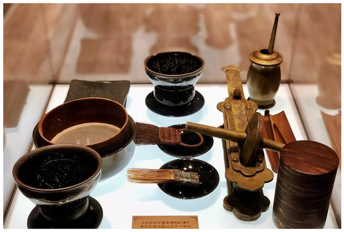
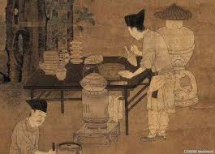
960 - 1279 CE: Song dynasty, China
Powdered tea became widespread in China, and preparation techniques like sifting and whisking also emerged. Japanese tea ceremonies were thought to preserve these Song dynasty traditions.
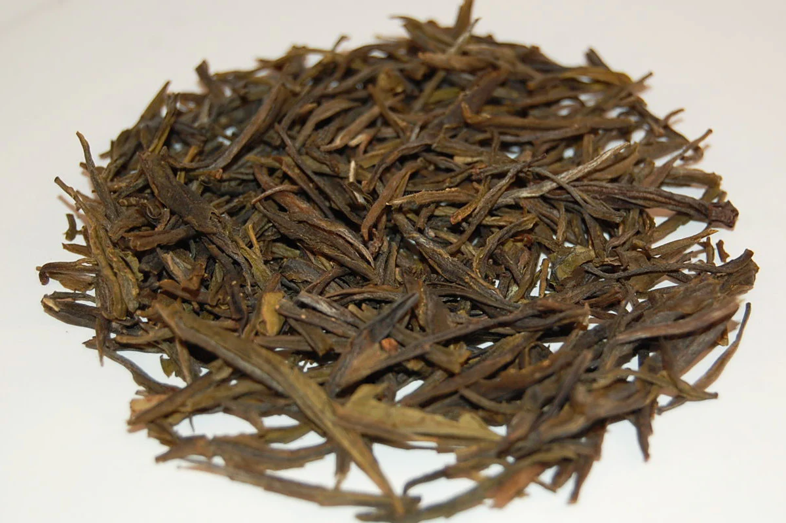
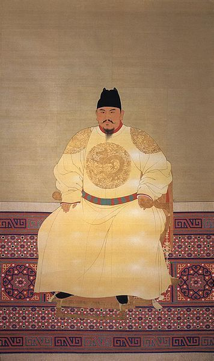
1391: Ming dynasty, China
Emperor Zhu Yuanzhang banned powdered tea, causing Chinese matcha culture to gradually fade. Loose leaf tea leaves became the norm; it wouldn’t be until the modern era that matcha regained its popularity.
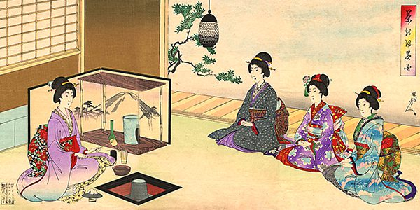
1336 - 1573 CE: Muromachi period, Japan
With new developments like stone mills and shade cultivation, matcha became fashionable among both the Japanese elite and common people. The first tea ceremonies also arose.
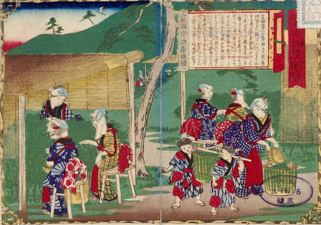

1603 - 1867: Edo period, Japan
Matcha production and harvesting became monopolized among the shogun, imperial court, feudal lords, and Uji tea masters. The prestigious Ochatsubo Dōchū tea jar journey becomes a tradition.
1868: Meiji Restoration, Japan
The fall of the shogunate ended the elite monopoly of Uji tea. With the turn of the century, technology like the tencha dryer as well as specialized research institutes modernized matcha production.
Present Day
In recent decades, matcha has skyrocketed in popularity in part due to aethetics, social media influence, and wellness culture. Once a traditional tea exclusive to East Asian cultures, it can now be found virtually anywhere across the globe in drinks, desserts, and confections. In Japan, institutions like Urasenke and Omotesenke continue to teach and preserve the traditional tea ceremony. In China, powdered tea and matcha have been reintroduced to mainstream culture thanks to global trends. Today, the global matcha industry is estimated to be worth over $3 billion!
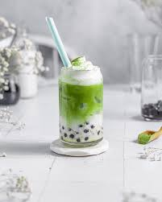
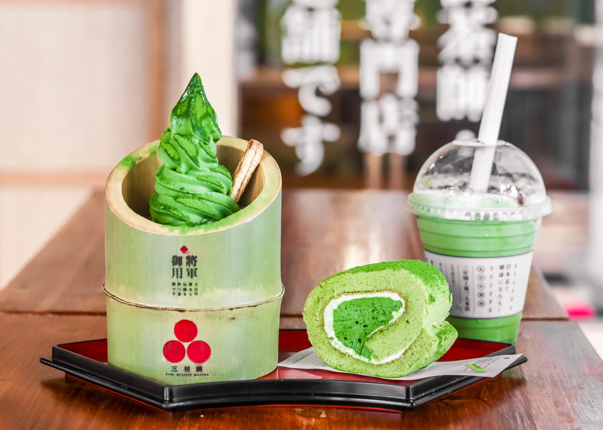

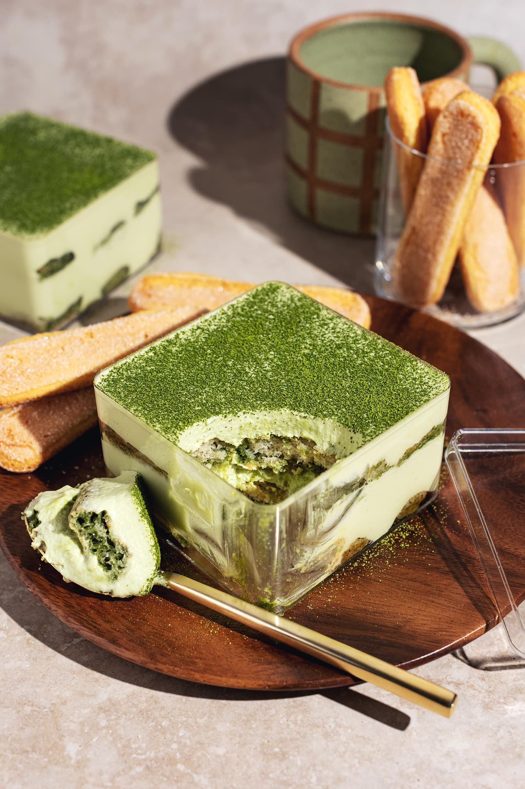